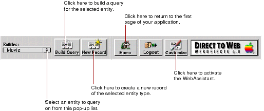

Direct To Web
PATH
WebObjects 4.0 Documentation >
WebObjects Tools and Techniques
 Table of Contents
Table of Contents  Previous Section
Previous Section
Dynamically Generated Pages
Besides the login page, there are nine types of dynamically-generated pages (or reusable components) in a Direct to Web application:
All pages in your application contain the standard Direct to Web header (defined in PageWrapper.wo) at the top of the page. This header provides a number of controls, described in the following figure.

For best results when navigating through a Direct to Web application, don't use your web browser's backtrack buttons. Instead:
Table of Contents  Next Section
Next Section